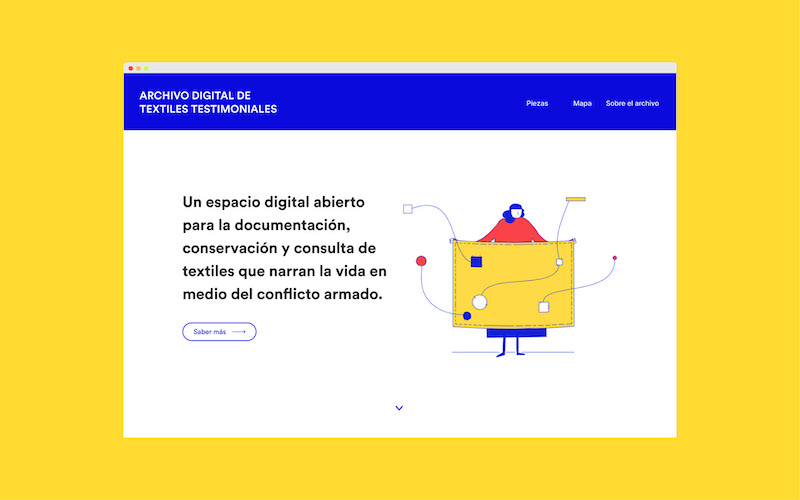
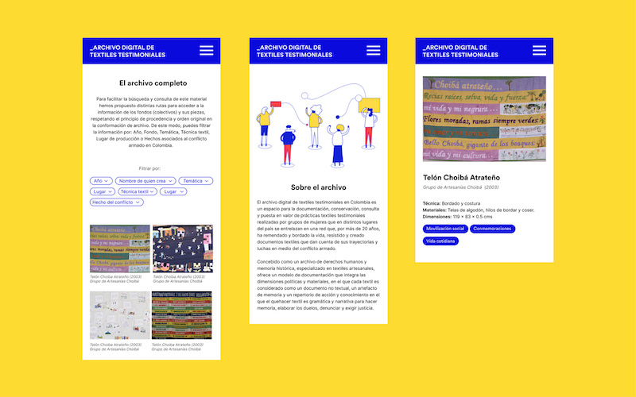
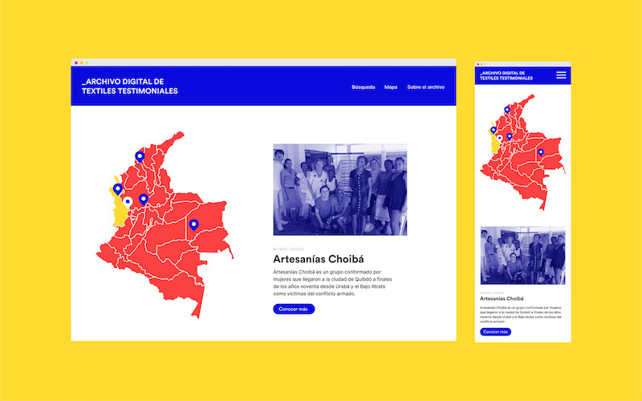
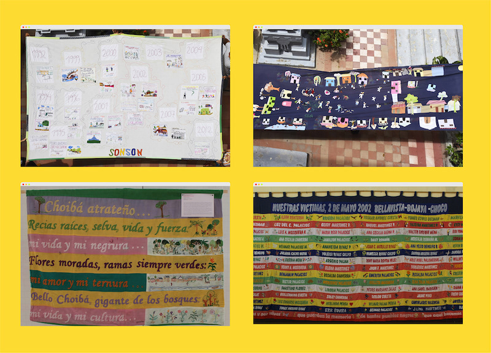

The digital archive of testimonial textiles is an open digital space for documentation, conservation and research of textiles that tell stories of life during the armed conflict in Colombia.
Visit the archive → textilestestimoniales.org
Role: User interface design, Illustration, Front End Development
Technologies: HTML, CSS, JavaScript



